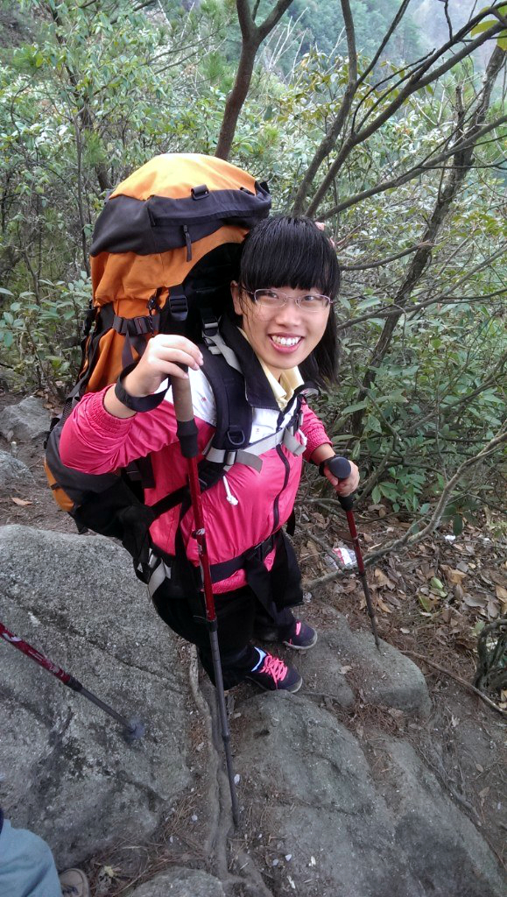
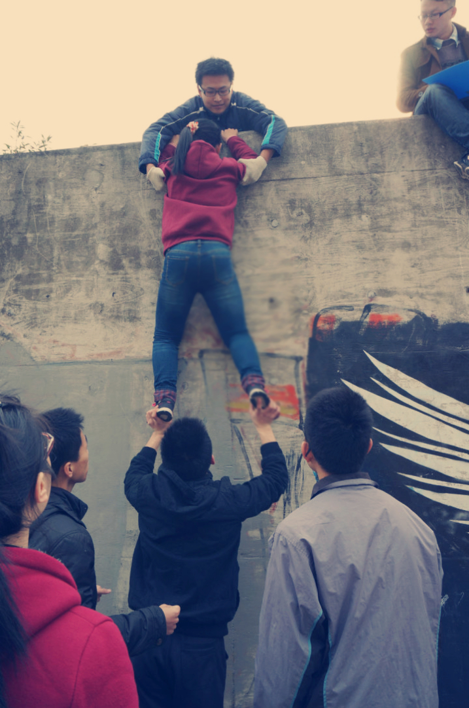
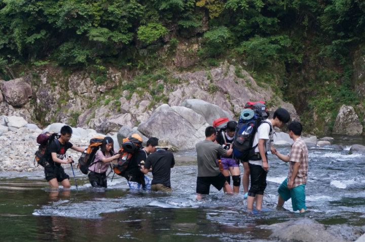
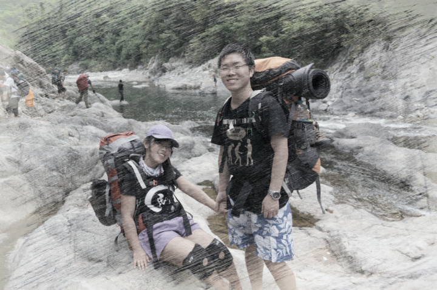
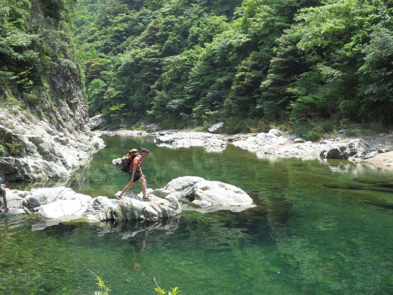

发信人: BeatboxST (ST), 信区: outdoor
标 题: 【野协团爆】【第七弹】后勤部！
发信站: 饮水思源 (2014年06月12日00:10:39 星期四)
部长：刘娟君（大家可以叫我君君哈~~）
副部长：陈师伟
部员:陈之彬、胡青青、孙行（都爆过啦，所以这里只是爆部长和副部长了）
刘娟君
巴黎高科大一
高三暑假遇到森哥给我看了几张野协出线的照片，觉得好帅啊好帅啊，结果一招新就愉快
滴报名了。然后就稀（nao）里（dai）糊（chou）涂（le）地加了后勤部⊙﹏⊙b（一学期
以来，智商被杆菌无限拉低，悔不当初TUT）
爱好是。。。额。。。我想想。。貌似是。。。睡觉！（跟一群喜欢户外热爱运动的孩纸
们一比，感觉自己弱爆了）
好了，不多说，上图！
screen.width - 200){this.width = screen.width - 200}">
据说第一印象很重要，那我就先上张正常一点的图。嗯，就是这样，后面再怂也不怕了23
3
 screen.width - 200){this.width = screen.width - 200}">
大明山是窝第一次出线，就是一个字，挫。。。各种挫。。。。不过还是超级开心，啦啦
啦~~
 screen.width - 200){this.width = screen.width - 200}">
这个是技能挑战赛。遇到了两个从小喜欢爬树的学长，嘿嘿~为了比赛，大家很努力的练习
了一个星期呢！赞一个。不过因为我的身高问题，爬墙的时候，很是纠结了一阵子，郁闷
ing。
screen.width - 200){this.width = screen.width - 200}">
到了最后比定向时，俩学长去安徽出差去了。。结果跟另两只妹纸临时组队，斯怡妹纸是
真真的软妹！！人又温柔又多才多艺的，自惭形秽。。。（请无视掉我一笑就不见了的小
眼睛→_→）
 screen.width - 200){this.width = screen.width - 200}">
 screen.width - 200){this.width = screen.width - 200}">
浙东是我第二次出线，互相扶持的大家真的让人很感动~~就个人来说，我也非常非常开心
，你们懂的。。。
陈师伟
机动大一
被杆菌（王黑黑）带进后勤部，认识了好多老人，新朋友，我最喜欢的社团就是野协了。
爱电影，爱动漫，爱汽车，爱健身，爱疯爱闹爱掉节操，不是基佬（=_=）
我很腼腆的，平时不轻易显露本性。
听说写得好能找到妹子，其实吧，我觉得不靠谱，长得丑没办法
作为副部长，我诚挚欢迎大家来后勤部，福利多多的，不信问部长（>_<）!
 screen.width - 200){this.width = screen.width - 200}">
--
※ 来源:·饮水思源 bbs.sjtu.edu.cn·[FROM: 112.84.183.163]
|